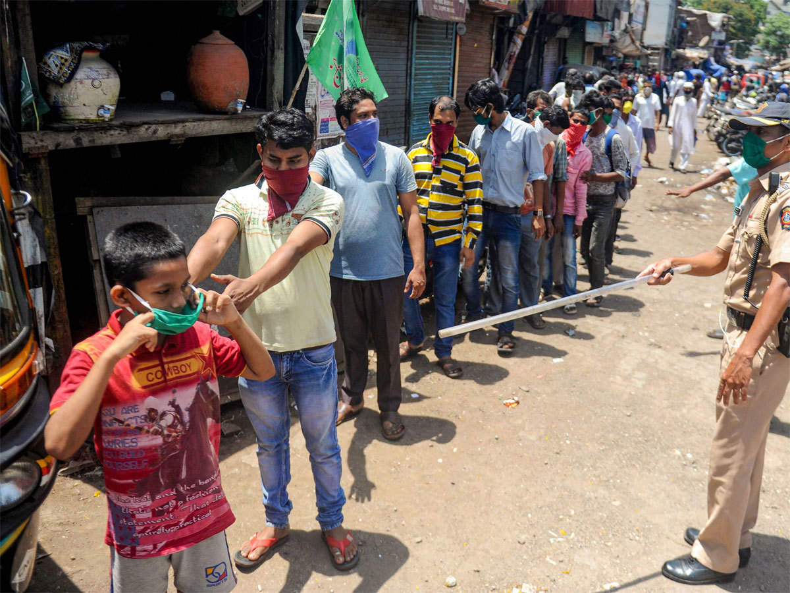
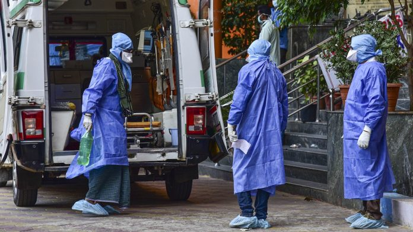
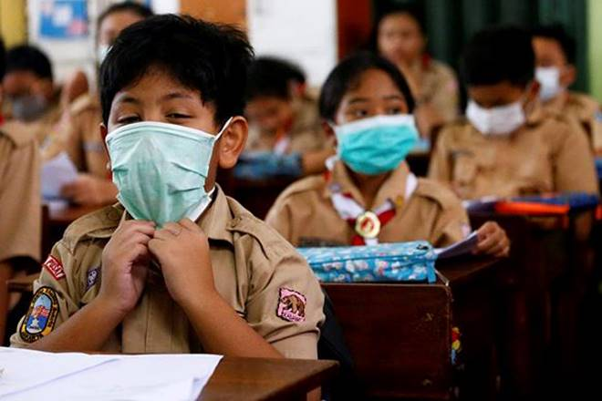

HIGHLIGHTS
• After a comprehensive review, and in view of the Lockdown measures having led to significant gains in the COVID-19 situation in the country, Ministry of Home Affairs (MHA), Government of India (GoI) issued an Order under the Disaster Management Act, 2005 to further extend the Lockdown for a further period of 2 weeks with effect from May 4.• Union Ministry of Home Affairs (MHA) has issued an order to allow the movement of migrant workers, pilgrims, tourists, students and other persons, stranded at different places across the country, by special trains to be operated by Ministry of Railways (MoR).
• WHO Field staff is supporting the States/UTs through the MoHFW to demarcate containment zones, implementing perimeter control, active search for cases through the house to house surveillance by special teams formed for the purpose, testing of all cases as per sampling guidelines, contact tracing and clinical management of all confirmed cases.
- India has recorded 46,711 confirmed cases, 1,583 deaths, 13,161 cured cases, according to the latest update released by the Union Ministry for Health and Family Welfare on Tuesday evening.
- India has sent three ships to evacuate citizens from Maldives and UAE.
- PM Modi chaired a meeting of the task force on development of a vaccine against coronavirus COVID-19.
- The lockdown in India has been extended till May 17. Telangana extends lockdown until 29 May.
- Liquor shops not allowed to open from tomorrow in Mumbai. Non-essential outlets in Mumbai to remain shut.
- Over 300,000 people in Gulf registered for evacuation.